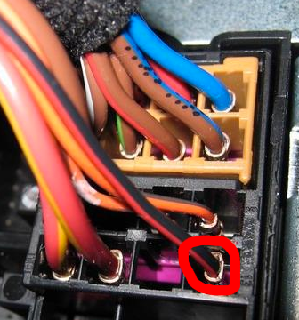
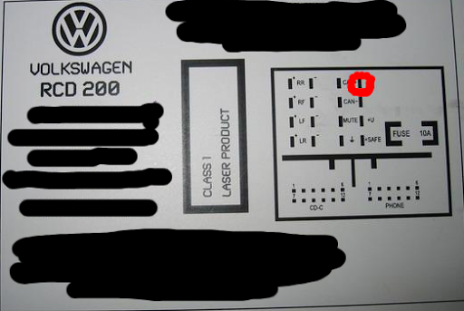

In diesem Artikel beschreibe ich kurz was zum Austausch des standardmäßig eingebauten Autoradios - hier RCD 200 - in einem VW Polo zu tun ist. Man benötigt nicht mehr als einen einfachen Stecker-Adapter für knapp 5€. Den Schluß, ob die üblichen Werkstätten (s.u.) aus finanziellen Gründen oder schlichter Inkompetenz unnötige Adapter für etwa 150€ anbieten überlasse ich dem Leser.
Kurzfassung: Diesen VW Quadlock auf ISO Adapter kaufen, das rote Kabel des Adapters an den Pin im Quadlock-Stecker für Zündungsplus stecken (siehe Bilder unten).
Der CAN-Bus:
Einen CAN-Bus Adapter wahlweise von einem Noname-Hersteller für 50€ oder von einem namhaften Autoradiohersteller für 150€ wollten mir eine wohlbekannte Werkstattskette, eine Vertragswerkstatt und eine freie Werkstatt andrehen. Dort sprachen die technischen Experten davon, man müsse das Auto für das neue Radio anlernen, jede Lautsprecher-Box würde über Netzwerk einzeln digital angesteuert oder das gesamte Auto könne gar kaputt gehen, weil der CAN-Bus durch fehlerhaften Anschluss zerstört würde. Interessanterweise war es in jedem dieser Fälle notwendig mit Auto und Autoradio persönlich vorstellig zu werden. Telefonisch ließ sich anhand der technischen Daten (Artikelbezeichnungen, Baujahr etc) keine Aussage entlocken.
Dabei ist die Sache viel einfacher: Der CAN-Bus kann verwendet werden, um ein Radio mit zusätzlichen Informationen zu speisen - er muss es aber nicht! Wieso dies auf Nachfrage von den technischen Experten negiert wird bleibt mir unklar. Zum Anschließen eines normalen Autoradios (DVD, Touchscreen, Bluetooth, Freisprechanlage, etc) reicht ein einfacher Adapter vom Fahrzeugs- auf ISO-Stecker aus. Bei VW ist es ein Quadlock Adapter.
Das Zündplus-Kabel:
Heute schalten sich Autoradios automatisch ein, wenn der Schlüssel steckt. Daher braucht es neben einer normalen Spannungsversorgung auch eine Leitung, genannt Zündungsplus, zu diesem Schalter. Da oftmals ein physischer Schalter fehlt ist dieses Kabel obligatorisch. Ein namhafter Unterhaltungselektronikhandel beispielsweise wollte mir ein Zündpluskabel verlegen lassen und bietet Quadlock-ISO Adapter an, die ein loses rotes Kabel für diesen Zweck haben.
Eine einfache Frage an dieser Stelle: Wie soll denn das eingebaute Radio von VW funktionieren, wenn das offensichtlich notwendige Kabel nicht schon am Quadlock-Stecker vorhanden ist?
Dabei ist die Sache viel einfacher: Am Quadlock-Stecker ist das Zündungsplus bereits vorhanden (siehe Bilder: rot-schwarzes Kabel). Daher braucht es einfach einen Adapter der ein Kabel mit dem Pin für den Stecker hat.


Wie wird das Radio also angeschlossen?
Diesen VW Quadlock auf ISO Adapter kaufen, das rote Kabel des Adapters an den Pin im Quadlock-Stecker für Zündungsplus stecken (siehe Bilder oben). Für den Anschluss der Radioantenne wird ein weiterer Adapter mit Phantomspeisung benötigt. Diesen habe ich nicht verbaut, da ich das Autoradio allein mit meinem Telefon gekoppelt verwende.